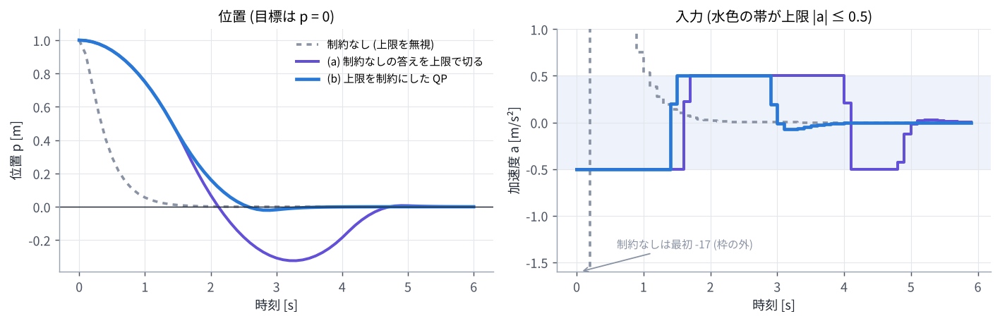

03. 線形 MPC (コストを 2 次関数に直す、QP)
この章のゴール
- 線形モデルの MPC で、未来の状態を入力の列の 1 次式 \(X = \Phi x_0 + \Gamma U\) で書ける
- コストが入力の列の 2 次関数 \(J(U) = U^\top H U + 2 x_0^\top F^\top U + \text{定数}\) になることが分かり、制約がないときの答え \(U^* = -H^{-1} F x_0\) を求められる
- 制約があると QP (2 次計画問題) になること、「制約なしの答えを切る」のとの違いが分かる
つながり 02 章 で「残差が変数の 1 次式なら、一発で解ける」と見ました。線形 MPC はまさにその場合です。04 章 の非線形 MPC は、毎回この章の形に近似して解きます。
0. この章で使う記号
| 記号 | 意味 |
|---|---|
| \(A\), \(B\) | 線形モデル \(x_{t+1} = A x_t + B u_t\) の行列 |
| \(Q\), \(R\), \(P\) | 状態・入力・最後の状態の重み行列 (対称で、\(Q, P\) は半正定値、\(R\) は正定値) |
| \(X\), \(U\) | 状態の列 \((x_1, \dots, x_N)\) と入力の列 \((u_0, \dots, u_{N-1})\) を縦に並べたもの |
| \(\Phi\), \(\Gamma\) | \(X = \Phi x_0 + \Gamma U\) と書いたときの行列 |
| \(\bar Q\), \(\bar R\) | \(Q\) (最後だけ \(P\)) と \(R\) を対角に並べた大きな行列 |
| \(H\), \(F\) | コストを \(U\) の 2 次関数で書いたときの行列 |
1. 線形モデルと 2 次コスト
モデルが線形で、コストが 2 次式の場合を考えます。目標は状態を 0 にすることとします (目標が 0 でなければ、\(x\) を「目標とのずれ」と読み替えます)。
例として、まっすぐなレールの上の台車を考えます。状態は位置 \(p\) と速度 \(v\)、入力は加速度 \(a\) です。
01 章 の 2 輪ロボットは \(\cos\theta\) や \(\sin\theta\) を含むので線形ではありません。その場合は 04 章で扱います。
2. 未来の状態を入力の列で書く
モデルを順に代入していきます。
縦に並べると、未来の状態は入力の列の 1 次式になります (\(N = 3\) の場合)。
\(\Gamma\) が下三角なのは、後の入力は前の状態に影響しない からです (\(u_2\) は \(x_1\) や \(x_2\) を変えられない)。\(\Gamma\) の \((t, s)\) ブロック \(A^{t-s} B\) は「入力 \(u_s\) を少し変えると、後の状態 \(x_{t+1}\) がどれだけ変わるか」(感度) です。04 章では、これを非線形モデルに広げます。
3. コストを \(U\) の 2 次関数にする
コストを行列で書くと \(J = x_0^\top Q x_0 + X^\top \bar Q X + U^\top \bar R U\) です (\(\bar Q = \operatorname{diag}(Q, \dots, Q, P)\)、\(\bar R = \operatorname{diag}(R, \dots, R)\))。ここに \(X = \Phi x_0 + \Gamma U\) を代入して整理すると
と、\(U\) の 2 次関数になります。\(R\) が正定値なら \(H\) も正定値なので、最小点はただ 1 つで、勾配を 0 とおけば求まります。
02 章 の言葉で言えば、残差 \(r(U) = \begin{bmatrix} \bar Q^{1/2} (\Phi x_0 + \Gamma U) \\ \bar R^{1/2} U \end{bmatrix}\) が \(U\) の 1 次式なので、ガウス・ニュートン法が 1 回で答えに着く場合です (\(J^\top J = H\) になります)。
3.1 手計算できる例
1 次元のモデル \(x_{t+1} = x_t + u_t\) (\(A = B = 1\))、\(N = 2\)、\(Q = R = P = 1\) で計算してみます。
\(x_0 = 1\) なら \(u_0 = -0.6\)、\(u_1 = -0.2\) で、\(x_1 = 0.4\)、\(x_2 = 0.2\)、コストは \(J = 1 + 0.36 + 0.16 + 0.04 + 0.04 = 1.6\) です (最初の 1 は \(x_0^2\) で、\(U\) によらない定数)。試しに \(U = (-0.5, -0.25)\) にすると \(J = 1.625\) で、確かに少し大きくなります。
3.2 receding horizon にすると線形フィードバックになる
毎周期 \(u_0^* = -0.6\, x_0\) だけを実行すると、制御則は \(u = -Kx\) (\(K = 0.6\)) という 状態の定数倍のフィードバック になります。閉ループは \(x_{t+1} = x_t - 0.6\,x_t = 0.4\,x_t\) なので、状態は毎周期 0.4 倍になって 0 に近づきます。
一般に、制約のない線形 MPC は、式 (2) の最初の行を取り出した \(u = -Kx\) という線形フィードバックと同じ です。\(K\) は \(H\) と \(F\) から決まる定数なので、前もって計算しておけます。演習 3 の台車では \(K = (17.05,\ 7.95)\) で、「位置が 1 m ずれていたら \(-17\) m/s² の加速度」という意味になります。(ホライズンを無限に長くすると、LQR と呼ばれる最適なフィードバックに一致します。)
4. 制約があると QP になる
実際の入力には上下限があります。入力の上下限や状態の制約は、どれも \(U\) の 1 次の不等式で書けます (状態は \(X = \Phi x_0 + \Gamma U\) なので)。
2 次関数を 1 次の不等式のもとで最小化する問題を 2 次計画問題 (QP) と呼びます。\(H\) が正定値なら凸な QP なので、答えはただ 1 つで、専用のソルバーで速く確実に解けます。ただし、答えはもう \(x_0\) の 1 次式 \(-H^{-1} F x_0\) ではありません (どの制約がぎりぎりで効いているかによって、場合分けされた 1 次式になります)。
4.1 「制約なしの答えを切る」ではだめな理由
演習 3 で、台車を位置 1 m から 0 へ止めます。\(\Delta t = 0.1\) 秒、\(N = 20\) (2 秒先まで)、加速度の上限は \(|a| \le 0.5\) m/s² です。
- 制約なし: 最初の入力は \(-17.05\) m/s²。上限の 34 倍で、実行できない
- (a) 制約なしの答えを上限で切る: 毎周期、式 (2) の \(u_0\) を \(\pm 0.5\) に切って実行する
- (b) QP: 上限を制約にした QP を毎周期解く

| 減速を始める時刻 | 最高速度 | 行き過ぎ (位置の最小値) | |
|---|---|---|---|
| (a) 切る | 1.6 秒 | 0.80 m/s | −0.324 m |
| (b) QP | 1.4 秒 | 0.70 m/s | −0.021 m |
(a) は「最後に強くブレーキをかければ止まれる」という前提の計画を、毎回切って実行しています。いざブレーキが必要になると 0.5 m/s² しか出せないので止まりきれず、0.32 m 行き過ぎます。(b) の QP は、ブレーキが 0.5 m/s² しか出せないことを知っているので、早めに減速を始めます。制約を知った上で計画する ことが、MPC が制約に強い理由です。
4.2 QP の解き方 (概要)
| 方法 | 考え方 | 例 |
|---|---|---|
| 能動集合法 | どの制約がぎりぎりで効くかを推定し、等式制約の問題を解いて推定を直す。前回の答えから始めると速い | qpOASES |
| 内点法 | 制約の内側から、境界に近づくほど大きくなる罰を少しずつ弱めながら解く | HPIPM |
| 1 次の方法 | 勾配と射影のくり返し (ADMM など)。1 回が軽い | OSQP |
この章の式 (1) は状態を消去して \(U\) だけの問題にしています (condensing)。状態も変数として残すと、行列が時刻ごとのブロックが並んだ疎な形になり、HPIPM のような専用ソルバーはホライズン長 \(N\) に比例する時間で解けます。演習 3 では簡単のため、上下限つきの最適化ができる scipy の L-BFGS-B を使っています。
5. 調整のつまみ
- \(Q\) を大きくすると目標に強く追従し、\(R\) を大きくすると入力がおだやかになる。効くのは比だけで、\(Q\) と \(R\) を両方 10 倍しても答えは変わらない
- \(N\) を長くすると先を見越した動きになるが、計算が増える
- 終端の重み \(P\) を適切に選ぶ (例えば LQR のリッカチ方程式の解にする) と、短いホライズンでも安定性を保証できる
演習 3
python exercises/ex03_linear_mpc.py
3.1 節の \(H\)、\(F\)、\(U^*\) を確かめ、台車の 3 つの制御を比べた図を作ります。
試してみること:
- 加速度の上限
amaxを 1.0 や 0.3 にすると、(a) と (b) の差はどう変わるか Rを0.01にすると、制約なしの答えの大きさ (\(K\)) はどう変わるか
理解度チェック
- \(\Gamma\) が下三角になるのはなぜか?
- 制約のない線形 MPC の答えが \(x_0\) の 1 次式になるのはなぜか?
- \(Q\) と \(R\) を両方 10 倍すると、答え \(U^*\) はどうなるか?
- 制約のある線形 MPC は、どんな最適化問題になるか。なぜ確実に解けるのか?
- 制約なしの答えを上下限で切って実行すると、何が困るか?
- 3.1 節の例で \(N = 1\) にすると (\(J = x_0^2 + u_0^2 + x_1^2\))、\(u_0^*\) はいくつか?
答えの例
- 後の入力は前の状態に影響しない (因果性) ので、\(x_{t+1}\) は \(u_0, \dots, u_t\) だけに依存し、\(u_{t+1}\) 以降の係数は 0 になるから。
- コストが \(U\) の 2 次関数で、勾配 \(2HU + 2Fx_0\) が \(U\) と \(x_0\) の 1 次式なので、勾配 = 0 の答えも \(x_0\) の 1 次式になるから。
- 変わらない。\(H\) と \(F\) が両方 10 倍になり、\(-H^{-1}F x_0\) は同じ。
- 凸な 2 次計画問題 (QP)。\(H\) が正定値なので、局所解がそのまま唯一の最適解になり、能動集合法や内点法で確実に解ける。
- 制約を知らずに立てた計画なので、ぎりぎりまで減速しないなど、切られた入力では計画どおりに動けない。演習 3 では止まりきれずに 0.32 m 行き過ぎた。
- \(J = x_0^2 + u_0^2 + (x_0 + u_0)^2\) を \(u_0\) で微分して 0 とおくと \(2u_0 + 2(x_0 + u_0) = 0\) なので、\(u_0^* = -x_0 / 2\) (= −0.5 \(x_0\))。
もっと知りたい人へ
- J. B. Rawlings, D. Q. Mayne, M. M. Diehl, Model Predictive Control: Theory, Computation, and Design, 2nd ed., 2017. 第 1〜2 章 (線形 MPC、安定性)、第 8 章 (数値解法)。
- F. Borrelli, A. Bemporad, M. Morari, Predictive Control for Linear and Hybrid Systems, Cambridge University Press, 2017. 制約つき線形 MPC と QP の解の構造。